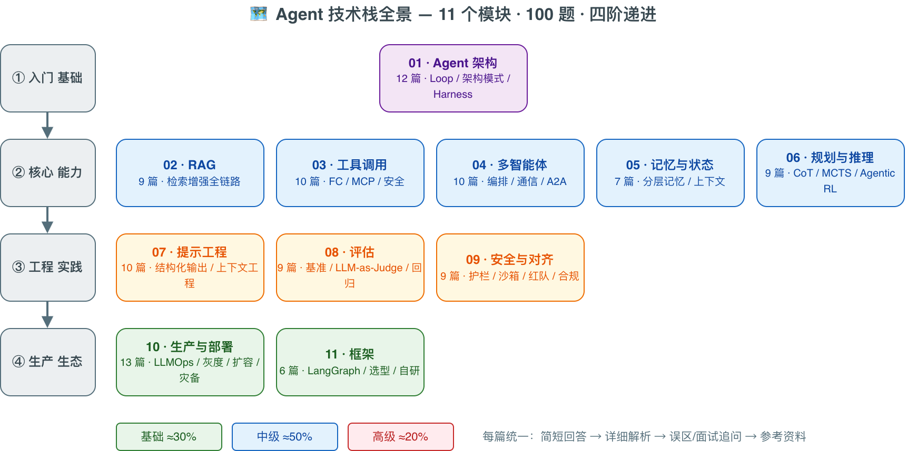

🤖 Agent Interview 100
AI Agent 知识库 — 100 个精选问题，以问题驱动学习，系统掌握 Agent 技术栈，同时搞定面试
🗺️ 全库知识地图

四阶递进：入门基础（Agent 架构）→ 核心能力（RAG / 工具调用 / 多智能体 / 记忆 / 规划推理）→ 工程实践（提示 / 评估 / 安全）→ 生产生态（部署 / 框架）。源文件为 assets/agent-stack-map.drawio，可用 draw.io 编辑更新。
✨ 项目亮点
- 🎯 问题驱动学习 — 每个问题就是一个学习入口，告诉你"该学什么"以及"为什么要学"，避免漫无目的地啃文档
- 📚 100 个精选问题 — 覆盖 AI Agent 技术栈的方方面面，从基础概念到生产实践，既是学习路线图，也是面试题库
- 🏗️ 11 大主题模块 — 系统化组织知识体系，循序渐进，形成完整的 Agent 知识图谱
- 🎯 三级难度分布 — 基础 (30%) · 中级 (50%) · 高级 (20%)，适配不同阶段的学习者
- 📝 统一四段式结构 — 每篇文章均包含：简短回答 → 详细解析 → 常见误区/面试追问 → 参考资料
- 💻 丰富的代码示例 — Python 实现、伪代码、架构图，理论与实践结合
- 🔬 前沿研究引用 — 引用最新论文与行业实践，紧跟技术前沿（含 Computer Use、Deep Research、12-Factor Agents、Agent 合规等 2026 最新内容）
📖 目录结构
📌 关于题号：本项目历经多次合并精简与差异化扩展，部分编号（如
#004、#045、#058、#105等共 16 个）已废弃不再使用。保留原号以维持外部链接、文章交叉引用与 Git 历史的稳定。当前实际题数 100，编号最大至 #116。
一、🏛️ Agent 架构 (01-agent-architecture/) — 12 题
Agent 系统的核心设计理念，从基本概念到生产级架构设计。
二、🔍 RAG (02-rag/) — 9 题
检索增强生成的全链路知识，从文档处理到评估优化（含 Context Relevancy、MRR、MAP 等评估指标）。
三、🔧 工具使用 (03-tool-use/) — 10 题
LLM 与外部工具的交互，从 Function Calling 到安全管控。
四、🤝 多 Agent (04-multi-agent/) — 10 题
多 Agent 协作系统的设计、编排、调试与场景故障处理。
五、🧠 记忆与状态 (05-memory-and-state/) — 6 题
Agent 的记忆管理，从上下文窗口到知识图谱。
| # | 文章 |
|---|---|
| 040 | Agent 记忆的类型：短期记忆、长期记忆、工作记忆 |
| 041 | 对话上下文窗口管理与压缩策略 |
| 043 | 如何实现 Agent 的持久化记忆（Persistent Memory）？ |
| 044 | 状态管理在 Agent 系统中的设计模式 |
| 046 | 长期记忆存储介质选型（向量/结构化/图谱） |
| 048 | 记忆的遗忘与更新机制：如何处理过时信息？ |
六、🧩 规划与推理 (06-planning-and-reasoning/) — 7 题
LLM 的推理能力增强与任务规划策略。
七、✍️ 提示工程 (07-prompt-engineering/) — 10 题
Prompt 设计、优化与管理的最佳实践。
八、📊 评估 (08-evaluation/) — 9 题
Agent 系统的评估方法、基准测试与可观测性。
九、🛡️ 安全与对齐 (09-safety-and-alignment/) — 8 题
Agent 系统的安全风险防控与对齐策略。
十、🚀 生产部署 (10-production-and-deployment/) — 13 题
从开发到生产的全链路工程实践。
十一、🧰 框架选型 (11-frameworks/) — 6 题
主流 Agent 框架的对比分析与自研决策。
📋 如何使用本项目
🧭 核心理念：以问题驱动学习
传统学习方式往往是"先读文档，再找场景"。本项目反过来——从一个具体问题出发，引导你去理解背后的原理、技术选型和工程实践。每个问题都是一个学习锚点，帮你建立"我需要学什么"的清晰路径。
💡 推荐学习方式
- 先想后看：先尝试用自己的话回答问题，再对照文章查漏补缺，找到知识盲区
- 顺藤摸瓜：每篇文章末尾的「延伸思考」和交叉引用会指向关联问题，沿着链路深入
- 动手实践：文章中的代码示例建议实际运行，配合下方「实践项目推荐」动手练习
- 横向关联：注意不同模块间的知识联系（如 RAG + 评估、安全 + 工具使用），构建知识网络
- 场景优先：场景题、系统设计题、代码 Review 题最接近真实工作，建议重点学习
🏷️ 模块概览
| 模块 | 题数 | 简介 |
|---|---|---|
| 🏛️ Agent 架构 | 12 | Agent 定义、架构模式、循环设计与错误恢复、生产级系统设计（含实战案例）、面试追问链、Harness 三层抽象、Computer Use / Deep Research（2026） |
| 🔍 RAG | 9 | 检索增强生成全流程：文档分块、向量数据库、混合检索、Re-ranking、Agentic RAG、评估指标与量化计算 |
| 🔧 工具使用 | 10 | Function Calling、Tool Schema、MCP 协议、工具安全与动态发现 |
| 🤝 多 Agent | 10 | 多 Agent 通信与编排模式、任务协调、Handoff、涌现行为、A2A 协议 |
| 🧠 记忆与状态 | 6 | 短期/长期/工作记忆、上下文窗口管理与压缩、持久化记忆、长期记忆存储介质选型、Agent Memory 框架横评 |
| 🧩 规划与推理 | 7 | CoT/ToT 推理、任务分解、Plan-and-Solve 与动态重规划、MCTS、2026 推理/Agent 模型版图、Agentic-RL |
| ✍️ 提示工程 | 10 | System Prompt 设计、结构化输出、Prompt Injection 防御、自动化 Prompt 优化、Context Engineering |
| 📊 评估 | 9 | 评估方法论（LLM→Agent）、LLM-as-Judge、Benchmark 设计、可观测性、Eval Harness 设计 |
| 🛡️ 安全与对齐 | 8 | 安全风险、Guardrails、权限最小化、幻觉检测、Red Teaming、Agent 合规（EU AI Act） |
| 🚀 生产部署 | 13 | LLMOps、成本优化、模型路由、延迟优化、场景故障排查、代码 Review、Sandbox / Runtime 选型、12-Factor Agents |
| 🧰 框架选型 | 6 | LangChain/LlamaIndex/LangGraph 对比、框架 vs 自研、Coding Agent Harness 横评 |
🆕 特色题型
本项目在传统问答题的基础上，引入了 7 种实践导向题型，帮助你从不同角度深入理解 Agent 技术：
| 题型 | 代表题目 | 学习价值 |
|---|---|---|
| 🔥 场景故障排查 | #104 | 通过真实故障场景，学习系统性排查思维和工程经验 |
| 📐 量化计算 | #020 | 手算 Precision@K、MRR、NDCG 等指标，真正理解评估体系而非死记公式 |
| 🏗️ 系统设计 | #010 | 从原则到实战案例，完整体验 Agent 系统设计全过程 |
| 🔍 代码 Review | #107 | 审查真实 Agent 代码中的问题，培养代码质量意识和最佳实践 |
| 🔗 递进追问链 | #108 | 10 层递进追问，从基础概念一步步深入到系统设计，串联知识体系 |
| 🛠️ Harness 主题 | #109、#110、#111、#112 | 2025-2026 Coding Agent 工程实践焦点：三层抽象（Harness/Framework/Runtime）+ Coding Harness 横评 + Eval Harness 设计 + Sandbox/Runtime 选型 |
| 🌐 前沿形态（2026） | #113、#114、#115、#116 | 2026 前沿热点：Computer Use / Browser Use Agent、Deep Research、Agent 合规（EU AI Act）、12-Factor Agents |
🗺️ 推荐学习路径
不知道从哪里开始？根据你的角色或水平，选择一条路径，跟着问题编号走即可。
按角色推荐
🛠️ Agent 应用工程师（偏工程实现）
核心能力：能独立开发和部署 Agent 应用
代码示例
Week 1: 基础概念
001 → 002 → 003 → 021 → 022 → 040 → 041
Week 2: 核心技能
006 → 027 → 028 → 062 → 063 → 044 → 059
Week 3: 生产实践
086 → 090 → 092 → 026 → 104（场景题）→ 107（代码 Review）→ 112（Sandbox/Runtime）
Week 4: 进阶提升
009 → 037 → 074 → 094 → 095 → 108（追问链）→ 109（Harness 抽象）
🔍 RAG 工程师（偏检索增强）
核心能力：设计和优化 RAG 系统
代码示例
Week 1: RAG 基础
011 → 013 → 014 → 015
Week 2: RAG 进阶
016 → 017 → 018 → 019 → 061
Week 3: RAG 评估与优化
020（含量化计算）→ 069 → 071 → 075
Week 4: 生产化
076 → 077 → 090 → 088 → 102（Context Engineering）
🏗️ AI 架构师（偏系统设计）
核心能力：设计大规模 Agent 系统架构
代码示例
Week 1: 架构基础
001 → 003 → 005 → 007 → 010（含系统设计实战案例）
Week 2: 多 Agent 与编排
031 → 033 → 034 → 036 → 037 → 101（A2A 协议）
Week 3: 生产架构
086 → 089 → 093 → 094 → 095 → 112（Sandbox/Runtime）
Week 4: 前沿技术
055 → 103（Agentic-RL）→ 098 → 100 → 108（追问链）→ 110（Coding Agent Harness 横评）
🛡️ AI 安全工程师（偏安全对齐）
核心能力：保障 Agent 系统的安全性
代码示例
Week 1-2: 安全基础
078 → 079 → 080 → 081 → 082 → 084 → 085 → 115（Agent 合规）
Week 3: 安全实践
030 → 064 → 024 → 104（场景题 - 含危险操作场景）
Week 4: 评估与监控
069 → 073 → 074 → 076 → 092 → 107（代码 Review - 含安全审查）
按水平推荐
- 入门阶段（1-2 周）：先通读所有「基础」难度题目，建立 Agent 技术全景认知
- 进阶阶段（2-3 周）：深入「中级」题目，掌握核心技术原理与工程实现
- 深入阶段（1-2 周）：攻克「高级」题目，构建系统设计与架构决策能力
🔨 实践项目推荐
配合学习，建议动手实践以下 mini-project：
| 项目 | 描述 | 涉及问题 |
|---|---|---|
| tiny-agent-loop | 从零实现一个最小 Agent 循环（50 行 Python），包含 Tool Calling、循环终止、错误处理 | #001 #006 #021 |
| tiny-rag | 搭建简单 RAG 系统，支持文档分块、向量检索、Re-ranking | #011 #013 #016 #017 |
| tiny-multi-agent | 实现两个 Agent 的协作对话（Router + Worker 模式），体验 Handoff | #031 #033 #037 #101 |
| tiny-eval | 用 Ragas 框架评估你的 RAG 系统，手算并验证评估指标 | #020 #069 #075 |
| tiny-mcp-server | 实现一个 MCP Server，让 Agent 调用自定义工具 | #027 #029 #024 |
🌟 内容特色
每篇文章均采用 统一的四段式结构，确保学习效率最大化：
代码示例
📌 简短回答 → 快速建立核心认知，知道"这个东西是什么"
📖 详细解析 → 深入原理、架构图、代码示例，理解"为什么这样设计"
⚠️ 常见误区/面试追问 → 避坑指南 + 高频追问，引导你"还应该学什么"
📚 参考资料 → 论文、博客、官方文档，提供"去哪里继续学"的指引
其他特色：
- 🔗 文章间交叉引用，形成知识网络，一个问题自然引出下一个
- 📊 难度标注（基础/中级/高级），便于制定个人学习计划
- 🆕 引用最新研究成果与行业实践（2024-2026）
👥 适用人群
- 📖 学习者 — 希望系统掌握 AI Agent 技术栈的开发者，本项目就是为你设计的
- 🏗️ 架构师 — 设计和构建 Agent 系统的技术负责人，可作为知识查阅手册
- 🔬 研究者 — 关注 Agent 技术前沿的研究人员，快速了解工程落地视角
- 🎯 求职者 — 准备 AI Agent / LLM 工程师面试，每个问题即是高频考点
- 👨💼 面试官 — 需要出题和评估候选人的技术面试官，可直接用作题库
📄 许可证
本项目采用 MIT 许可证 开源。
你可以自由地使用、修改和分发本项目的内容，但请保留原始版权声明。
⭐ 如果这个项目对你有帮助，欢迎 Star 支持！